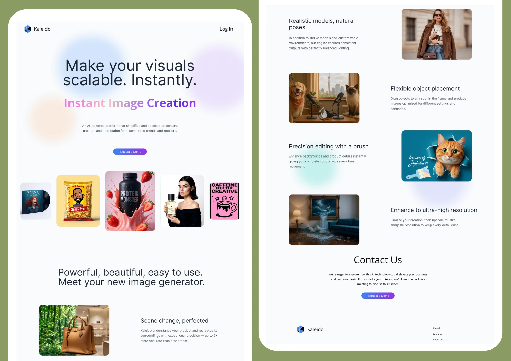
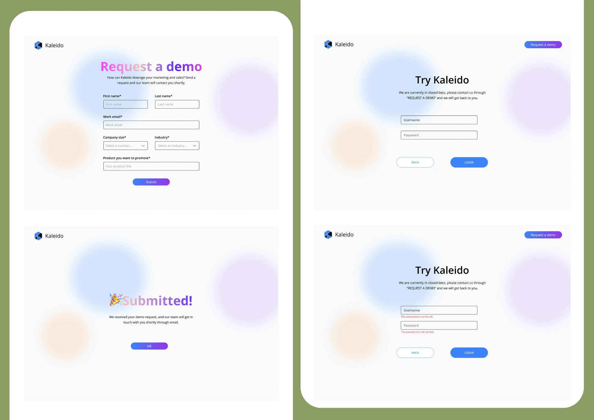
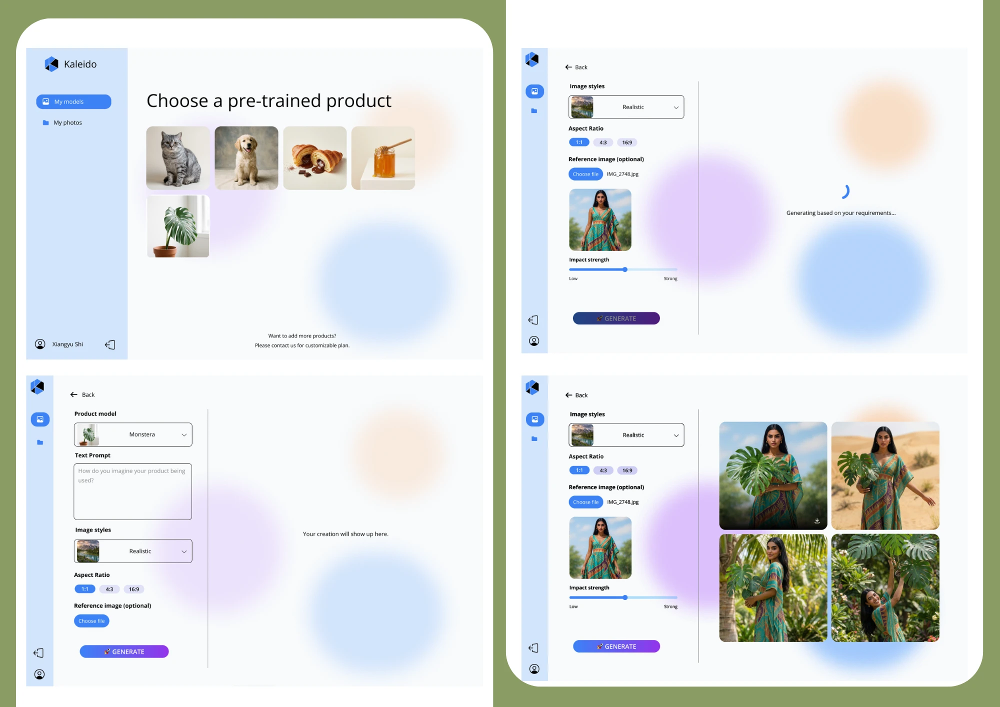
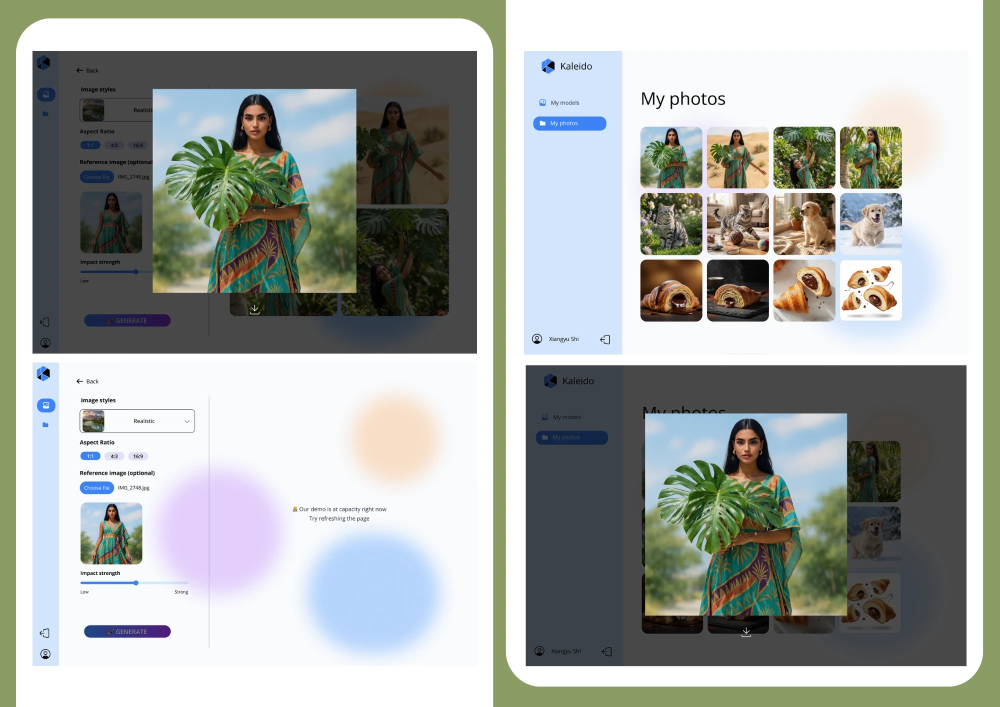

Overview
Helping brands scale visual content
This landing page is designed to clearly communicate how Kaleido helps brands and retailers dramatically reduce content production costs and generate diverse marketing visuals within seconds using AI.

Kaleido — Landing Page
Problem
Key Pain Points Identified
Through early research, I found that marketing teams commonly struggle with:
Heavy reliance on external resources like photographers and models, leading to long timelines and high costs
One photoshoot cannot cover all scenarios, limiting content scalability
Rapid testing of different styles or color variations is almost impossible
These challenges make day-to-day marketing slow, expensive, and hard to scale.
Solution
Conversion-driven narrative
The landing page narrative follows a simple, conversion-driven structure:
Pain Points
→
Product
→
Experience Flow
→
Value
→
Call to Action
The goal is to reduce cognitive load so users can quickly understand, trust, and try the product.

Kaleido — Demo Request & Login Flow
Design
Core Design Decisions
Clear one-sentence value
Hero section states the core promise: "With just five basic product photos, AI instantly generates diverse visuals, including new scenes, colors, and model variations."
Demo-first to reduce friction
Pre-trained demos let users try the product immediately, no uploads needed, lowering the barrier to first engagement.
Simple three-step flow
Choose a demo → Add a prompt → Get results in 10–20 seconds. Supports common aspect ratios and optional reference images for better control.
Authentic interface & outputs
Real UI screenshots and true generation samples reinforce trust and credibility throughout the page.

Kaleido — Generation Interface

Kaleido — Results & Photo Gallery
Outcome
Visuals in seconds
Users can produce ready-to-use visuals for ads, social media, and e-commerce within seconds, significantly increasing content production efficiency.
Strategically placed call to actions guide users to start generating or create an account at the right moment.
View Project
Explore the work